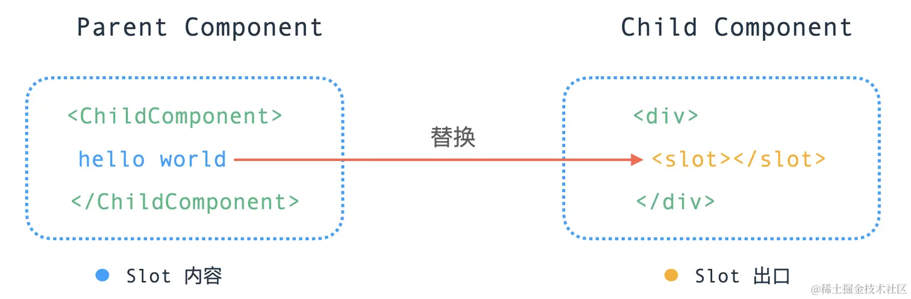

Vue 提供了一个 <slot> 插槽的内置特殊元素，用来实现为子组件传递一些模板片段，然后由子组件完成对这些模版的渲染工作。一个简单的例子，这里有一个父组件，写入了一段插槽模版内容：
html复制代码<ChildComponent>
<!-- 插槽内容 -->
hello world
</ChildComponent>
在子组件 <ChildComponent> 中则通过 <slot> 元素来实现对插槽内容的出口渲染：
html复制代码<div>
<!-- 插槽出口 -->
<slot></slot>
</div>
<slot> 元素是一个插槽出口 (slot outlet)，标示了父元素提供的插槽内容 (slot content) 将在哪里被渲染。

接下来，我们将一起探索，插槽内容是如何被渲染到指定出口的。
一个组件如果携带一些插槽内容，那么这个组件在渲染的时候，会有哪些变化。先来看一个较为常规的 <slot> 插槽内容用法：
html复制代码<ChildComponent>
<template #header>header</template>
<template #content>content</template>
<template #footer>footer</template>
</ChildComponent>
经过编译器转换后，生成的渲染函数如下：
js复制代码import { createTextVNode as _createTextVNode, resolveComponent as _resolveComponent, withCtx as _withCtx, openBlock as _openBlock, createBlock as _createBlock } from "vue"
export function render(_ctx, _cache, $props, $setup, $data, $options) {
const _component_ChildComponent = _resolveComponent("ChildComponent")
return (_openBlock(), _createBlock(_component_ChildComponent, null, {
header: _withCtx(() => [
_createTextVNode("header")
]),
content: _withCtx(() => [
_createTextVNode("content")
]),
footer: _withCtx(() => [
_createTextVNode("footer")
]),
_: 1 /* STABLE */
}))
}
可以看到，createBlock 的第三个参数 children 相对于普通父子节点来说，由一个数组变成一个对象的形式，这个对象包含了以插槽内容名称命名的函数，以及一个 _ 属性，这个属性的含义是 slotFlag。
下面我们再详细看一下 createBlock 这个函数的实现，前面的章节中，我们提到 createBlock 函数本质就是调用了 createVNode 函数创建 vnode 节点，不过会增加一些和编译时优化相关的属性 dynamicChildren 罢了。那么核心看一下在创建 vnode 的时候产生的一些变化：
js复制代码function _createVNode(type, props, children, patchFlag, dynamicProps = null, isBlockNode = false) {
// ...
if (isVNode(type)) {
// clone vnode
const cloned = cloneVNode(type, props, true /* mergeRef: true */)
if (children) {
// 标准化子节点
normalizeChildren(cloned, children)
}
return cloned
}
// ...
}
createVNode 函数在执行的时候，针对 vnode 节点如果存在子节点的话，会调用 normalizeChildren 函数：
js复制代码export function normalizeChildren(vnode, children) {
let type = 0
const { shapeFlag } = vnode
if (children == null) {
children = null
} else if (isArray(children)) {
// 子节点是数组的情况
type = ShapeFlags.ARRAY_CHILDREN
} else if (typeof children === 'object') {
// 针对 children 是对象的处理内容
// 对于 ELEMENT 或者 TELEPORT slot 的处理
if (shapeFlag & (ShapeFlags.ELEMENT | ShapeFlags.TELEPORT)) {
const slot = (children as any).default
if (slot) {
slot._c && (slot._d = false)
normalizeChildren(vnode, slot())
slot._c && (slot._d = true)
}
return
} else {
// 标记子节点类型为 SLOTS_CHILDREN
type = ShapeFlags.SLOTS_CHILDREN
const slotFlag = (children as RawSlots)._
if (!slotFlag && !(InternalObjectKey in children!)) {
// 如果 slots 还没有被标准化，添加上下文实例
;(children as RawSlots)._ctx = currentRenderingInstance
} else if (slotFlag === SlotFlags.FORWARDED && currentRenderingInstance) {
// 处理 slotFlag 为 FORWARDED 的情况
// 处理 STABLE slot
if (
(currentRenderingInstance.slots as RawSlots)._ === SlotFlags.STABLE
) {
;(children as RawSlots)._ = SlotFlags.STABLE
} else {
// 添加 DYNAMIC slot
;(children as RawSlots)._ = SlotFlags.DYNAMIC
vnode.patchFlag |= PatchFlags.DYNAMIC_SLOTS
}
}
}
}
// ...
vnode.children = children
vnode.shapeFlag |= type
}
这里我们只需要关注，如果传入的子节点类型是个 Object 的情况下，会为 vnode.shapeFlag 属性添加 SLOTS_CHILDREN 类型。那这个 shapeFlag 在哪里会被用到了？再回到我们之前的组件挂载过程中的 setupComponent 函数中：
js复制代码export function setupComponent(instance) {
// 1. 处理 props
// 取出存在 vnode 里面的 props
const { props, children } = instance.vnode;
initProps(instance, props);
// 2. 处理 slots
initSlots(instance, children);
// 3. 调用 setup 并处理 setupResult
setupStatefulComponent(instance);
}
这里我们重点看一下是如何处理 slots 的：
js复制代码export const initSlots = (instance, children) => {
// shapeFlag 有 SLOTS_CHILDREN 类型
if (instance.vnode.shapeFlag & ShapeFlags.SLOTS_CHILDREN) {
// 对于我们的示例中，slotFlag 类型是 STABLE
const type = (children as RawSlots)._
if (type) {
// 用户可以使用 this.$slots 来获取 slots 对象的浅拷贝内部实例上的 slots
// 所以这里应该避免 proxy 对象污染
// 为 instance slots 属性赋值 children
instance.slots = toRaw(children)
// 标记不可枚举
def(children, '_', type)
}
// ...
} else {
instance.slots = {}
// ...
}
def(instance.slots, InternalObjectKey, 1)
}
针对我们上面的示例，首先 slots 渲染的 slotFlag 类型为 STABLE，所以这里的 initSlot 所做的操作就是为 instance.slots 赋值为 toRaw(children)。
到这里，我们可以认为，对于一个组件中如果包含 slot 内容，那么这个组件实例在被渲染的时候，这些内容将会被添加到当前组件实例的 instance.slots 属性上：
js复制代码// ChildComponent 组件实例
{
type: {
name: "ChildComponent",
render: render(_ctx, _cache) { ... },
// ...
},
slots: {
header: _withCtx(() => [
_createTextVNode("header")
]),
content: _withCtx(() => [
_createTextVNode("content")
]),
footer: _withCtx(() => [
_createTextVNode("footer")
]),
},
vnode: {...}
// ...
}
注意，
slots是被挂载到了子组件实例ChildComponent中，而非父组件中。
插槽除了有内容外，还需要制定对象的出口，我们再一起看一下上述示例中对应的出口内容：
html复制代码<div>
<slot name="header"></slot>
<slot name="content"></slot>
<slot name="footer"></slot>
</div>
上面的模版会被编译器编译成如下渲染函数：
js复制代码import { renderSlot as _renderSlot, openBlock as _openBlock, createElementBlock as _createElementBlock } from "vue"
export function render(_ctx, _cache, $props, $setup, $data, $options) {
return (_openBlock(), _createElementBlock("div", null, [
_renderSlot(_ctx.$slots, "header"),
_renderSlot(_ctx.$slots, "content"),
_renderSlot(_ctx.$slots, "footer")
]))
}
可以看到，带有 <slot> 内容的元素，会被 renderSlot 函数进行包裹，一起来看一下这个函数的实现：
js复制代码export function renderSlot(slots, name, props, fallback, noSlotted) {
// ...
// 根据 name 获取 slot 内容
let slot = slots[name]
openBlock()
const validSlotContent = slot && ensureValidVNode(slot(props))
// 创建 slot vnode
const rendered = createBlock(
Fragment,
{
key:
props.key ||
(validSlotContent && (validSlotContent as any).key) ||
`_${name}`
},
validSlotContent || (fallback ? fallback() : []),
validSlotContent && (slots as RawSlots)._ === SlotFlags.STABLE
? PatchFlags.STABLE_FRAGMENT
: PatchFlags.BAIL
)
// ...
// 返回 slot vnode
return rendered
}
可以看到，renderSlot 函数核心功能就是根据 slot 的 name 属性去子组件实例上的 slots 中查找对应的执行函数，然后创建一个以 slot 为子节点的 Fragment 类型的 vnode 节点。
上述 slot 容器中的内容是通过 withCtx(...) 函数进行封装执行的，那么这个函数的作用是什么呢？先来看一下这个函数的实现：
js复制代码export function withCtx(fn, ctx= currentRenderingInstance, isNonScopedSlot) {
// ...
const renderFnWithContext: ContextualRenderFn = (...args: any[]) => {
if (renderFnWithContext._d) {
setBlockTracking(-1)
}
// 暂存子组件实例
const prevInstance = setCurrentRenderingInstance(ctx)
let res
try {
// 运行创建 vnode 的函数
res = fn(...args)
} finally {
// 重置回子组件实例
setCurrentRenderingInstance(prevInstance)
}
return res
}
// ...
return renderFnWithContext
}
withCtx 函数巧妙的利用了闭包的特性，在运行父组件的时候，通过 withCtx 保存了父组件的实例到 currentRenderingInstance 变量上，然后在子组件执行 renderFnWithContext 函数时，先恢复父组件的实例上下文，再执行生成 vnode 函数，执行完成后，再重置回子组件的实例。这样做的好处是在做 <slot> 渲染内容的时候，让 slot 的内容可以访问到父组件的实例，因为 slot 内容本身也是在父组件中定义的，只是被渲染到了指定的子组件中而已。
什么是 dynamic slots ? 我们之前还有一种动态类型叫做 dynamic children 在 DOM 更新时做靶向更新。而 dynamic slots 则是用于判断 slot 内容是否需要更新。
那么 Vue 3 会为哪些组价添加 dynamic slots 属性呢？
Vue 3 中，对于动态的插槽名、条件判断、循环等场景的 <slot>，则会被标记为 dynamic slots，拿动态的插槽名举例：
html复制代码<child-component>
<template #[dynamicSlotName]>header</template>
</child-component>
则会被渲染成：
js复制代码import { createTextVNode as _createTextVNode, resolveComponent as _resolveComponent, withCtx as _withCtx, openBlock as _openBlock, createBlock as _createBlock } from "vue"
export function render(_ctx, _cache, $props, $setup, $data, $options) {
const _component_child_component = _resolveComponent("child-component")
return (_openBlock(), _createBlock(_component_child_component, null, {
[_ctx.dynamicSlotName]: _withCtx(() => [
_createTextVNode("header")
]),
_: 2 /* DYNAMIC */
}, 1024 /* DYNAMIC_SLOTS */))
}
可以看到，对于动态的插槽名，组件渲染函数会为 patchFlag 标记为 DYNAMIC_SLOTS。在执行组件更新时，则会根据这个标记来判断当前组件是否需要更新：
js复制代码const updateComponent = (n1, n2, vnode) => {
if (shouldUpdateComponent(n1, n2, optimized)) {
// ...
// 执行更新逻辑
}
}
function shouldUpdateComponent(prevVNode, nextVNode, optimized) {
// ...
const { props: nextProps, children: nextChildren, patchFlag } = nextVNode
// patchFlag 是 DYNAMIC_SLOTS 的情况，shouldUpdateComponent 返回 true
if (optimized && patchFlag >= 0) {
if (patchFlag & PatchFlags.DYNAMIC_SLOTS) {
return true
}
}
}
这里我们介绍了关于 <slot> 内置元素的实现原理，本质上就是父组件在渲染的时候，如果遇到了 <slot> 内容，则会暂时将其缓存到组件实例上，然后在组件实例化的过程中，从父组件中取出对应的 slots 按照名称进行渲染到指定位置。
同时配合 PatchFlags 属性，可以做到只有在 DYNAMIC_SLOTS 的情况下，才去更新含有 slot 的组件，减少了不必要的渲染性能负担。